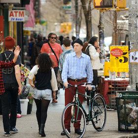

Williamsburg
#diversefood #outdoor #market #bythewater #view #DUMBO #bridgeview #sand #beer #skylineview #outdoor #rooftop #beertour #chill #engineeringmasterpiece #pizza #skylineview
Neighborhood Lowdown
Hipster town - the complete opposite of Meatpacking! Where poor artists used to live - now unaffordable for real hipsters, Williamsburg exudes the eclectic atmosphere of luxury hipster resulting from the combination of art+weirdness+money. I love this neighborhood and was thinking about moving there, given I stayed a bit longer, and most of my European friends were big fans too. Note: there are some non-Williamsburg Brooklyn places that are mentioned as well - I'll be sure to point those out.
Public Transit Service: A, C, E
Cup of Joe

Blue Bottle Coffee - 160 Berry Street
Same one as in Chelsea, but again, this one comes highly recommended by many others.
Let's get started
Eat
Smorgasburg
#diversefood #outdoor #market #bythewater #view
In the summer, Williamsburg has a cool outdoor "food fair" selling all kinds of cool, random, up and coming foods. There are weird things like Ramen Burgers (noodles as the bun for a burger 0_0..not really my thing) but also the best of the BEST when it comes to coffee, donuts, BBQ, innovate cheese cakes, etc.
Drink
Beekman Beer Garden
#DUMBO #bridgeview #sand #beer
This beer garden (not in the typical sense) offers an absolutely spectacular view of the Brooklyn Bridge in all its grandeur. Great for a sunny day, but even so, consider bringing a jacket as it sometimes gets chilly anywhere along the water.
Wythe Hotel
#skylineview #outdoor #rooftop
This is probably the best view of NYC's skyline from outside of the city.
Brooklyn Brewery
#beertour #chill
Brooklyn Brewery is right next door to the Wythe hotel - probably underwhelming compared to the great beer halls of Germany, but an authentic and relaxing American beer experience if you are looking for one.
Play
Brooklyn Bridge
#engineeringmasterpiece #pizza #skylineview
If you are going to walk the Brooklyn Bridge, I would recommend walking it from the Brooklyn side. Take the E (I think the A also works) to High Street and treat yourself to a piece of pizza. You will likely see a long line for Grimaldi's, but to avoid the hype and get pizza just as good, go for Juliana's right next door which was opened by the original owners of the Grimaldi's. Make sure you look up specific directions for the bridge - the pedestrian entrance can be a little hard to find.
Recommended Trip
Take the L to Williamsburg and enjoy Smorgasburg.

Head over to the Brookyn Brewery for a tour or just drinks and move to the Wythe hotel for a sunset view.
Cab down south to the Brooklyn Bridge - grab a piece of pizza at Juliana's and then head over to the pedestrian entrance to enjoy one of the most gorgeous and serene 30 minute walks you will ever take.
- liang.val63@gmail.com |
- 02.22.2015 |
- valpal23.blogspot.com |
- Home
This website is not intended for public viewing and all photos used are only temporary placeholders.